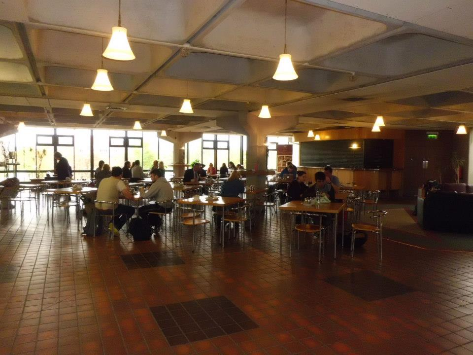
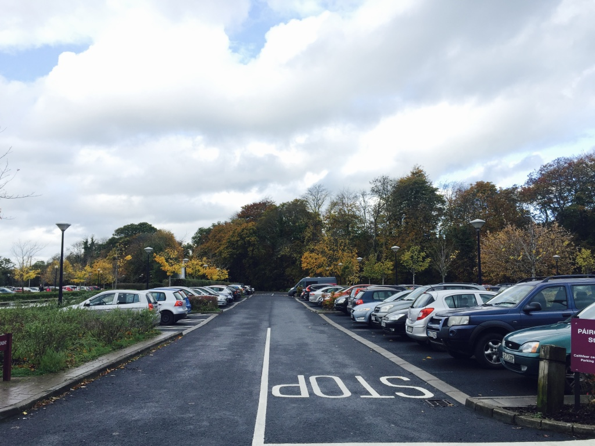
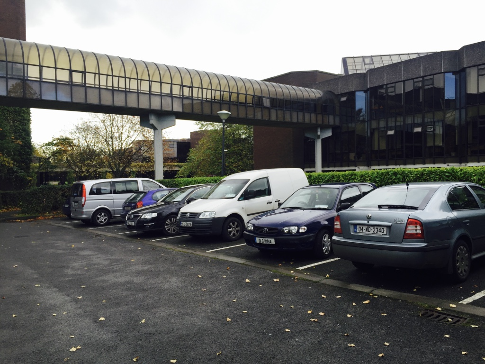

The Foundation Building
Useful Information
General Information
The Foundation Building was designed by P Whelan & Co and completed in 1993. With an area of 12,436m2, the building houses the Office of the Vice President Research, School of Law, Department of Sociology and Department of Politics and Public Administration. This €19 million research, teaching and cultural complex is home to:
- University Concert Hall, which seats 1,000 people and contains state-of-the-art sound and lighting systems
- A major postgraduate research facility
- Modern teaching facilities
- Art galleries and exhibition spaces
See the University Concert Hall website for more details.
University Concert Hall

Situated on the UL campus, University Concert Hall (UCH) was opened on 18 September 1993 by then Taoiseach Mr Albert Reynolds TD and US Ambassador Mrs Jean Kennedy Smith. UCH is the first purpose-built concert hall in Ireland. The Foundation Building, which incorporates UCH, has international-standard access facilities for people with disability.
Click to call UCH Reception University Concert Hall WebsiteBourn Vincent Gallery

The William & Elizabeth Bourn Vincent Gallery was opened on 21 September 1993 by Dr A J F O'Reilly, Chief Executive of H J Heinz. The creation of the gallery by UL represents the coming of age of a policy that has sought to encourage the exhibition of noteworthy examples of visual art.
Location: Level 1 of Foundation Building
Bourn Vincent Gallery Website
Café Allegro
Café Allegro in the Foundation Building is a comfortable, relaxed, quiet and sophisticated alternative to other outlets on campus. It serves simple, great-tasting baked goods and a selection of salads and soups. We recommend trying the cake and coffee here - it's a real treat.
Café Allegro WebsiteBuilding Hours and Contact Info
Foundation Building Opening Hours:
Monday to Friday: 8:30am - 9:00pm
Saturday & Sunday: Closed
Nearest Car Park

Car Park 17: Pay Car Park
Guide Me There
Car Park 18: Staff Car Park
Guide Me There
Car Park 20: Free Car Park
Guide Me There